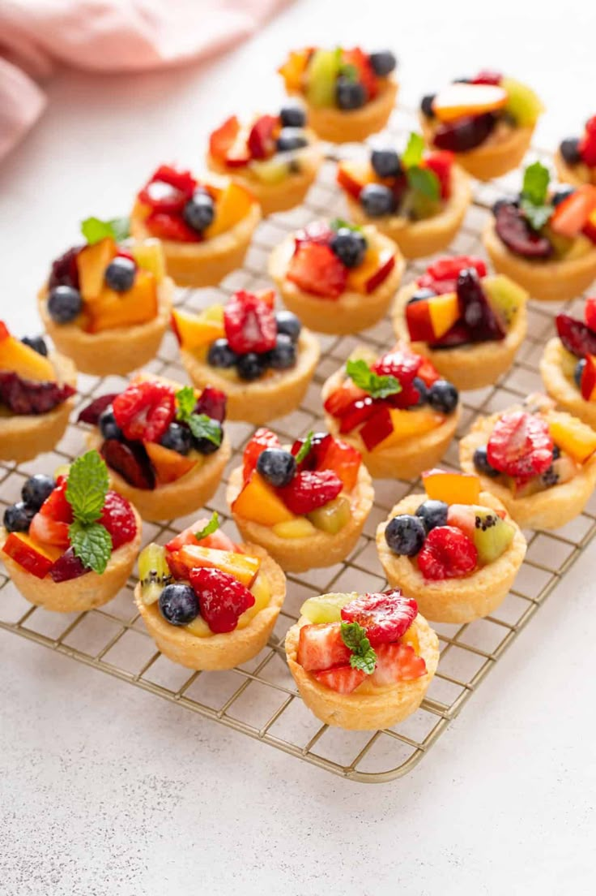
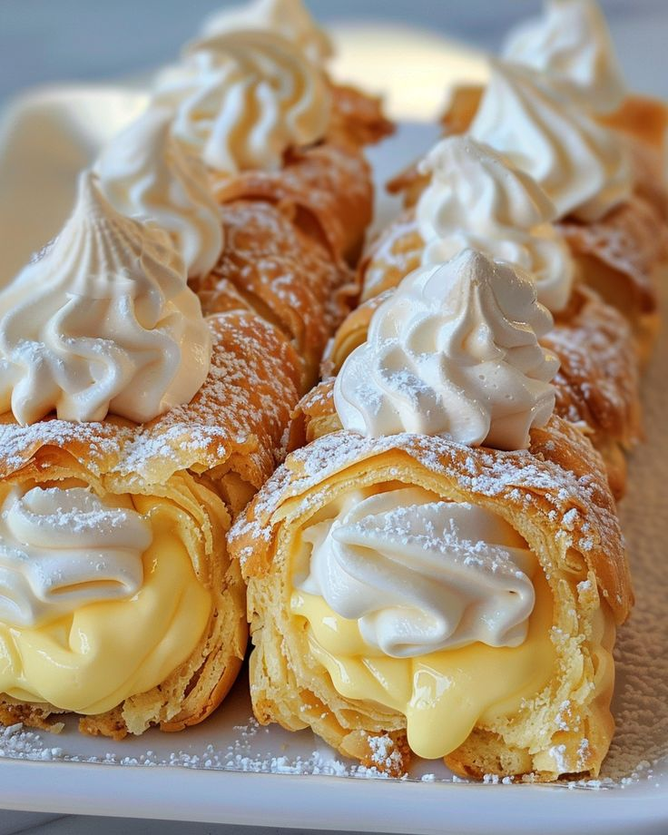
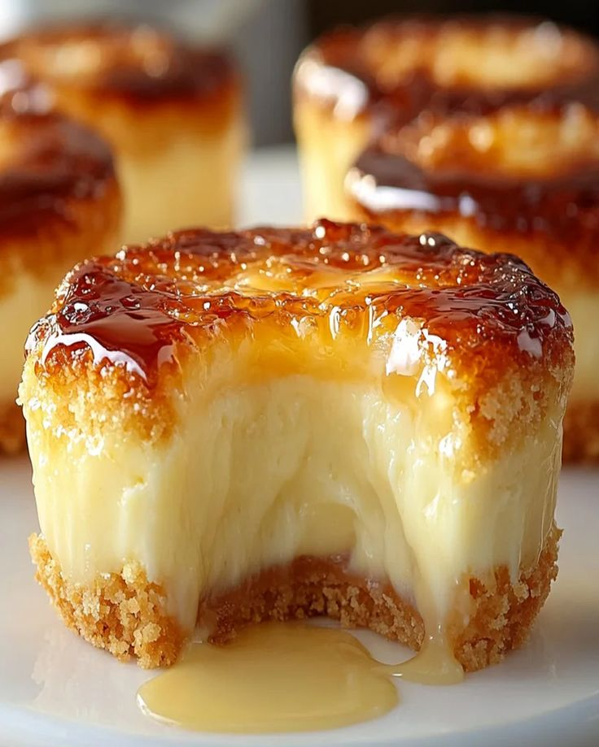
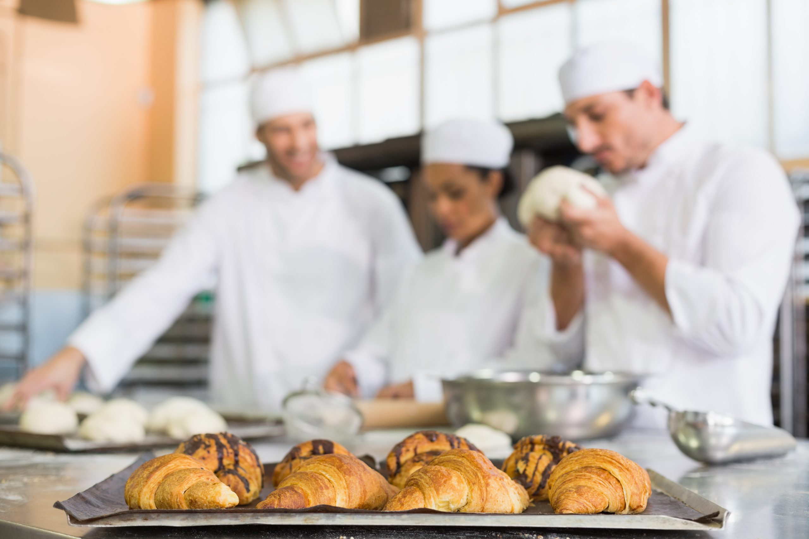
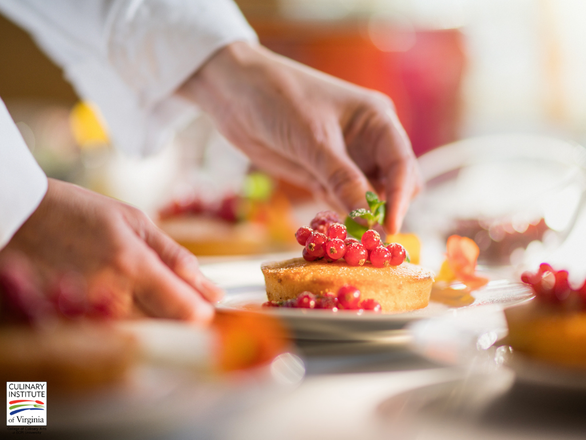
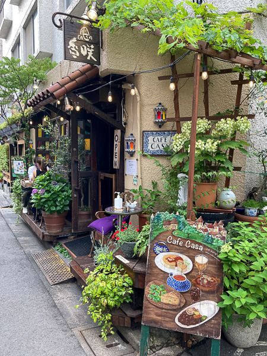
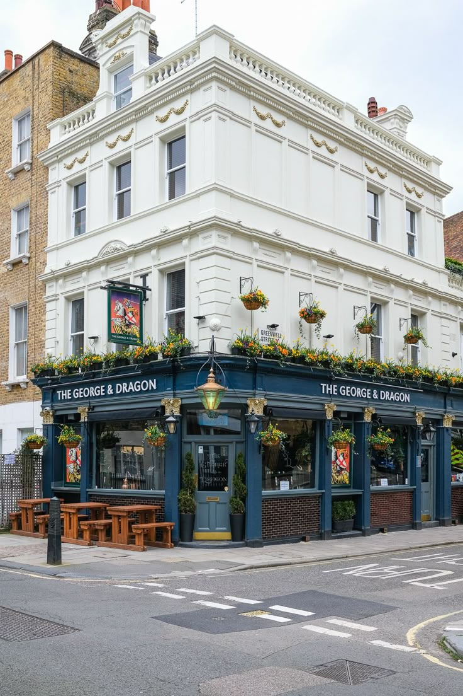
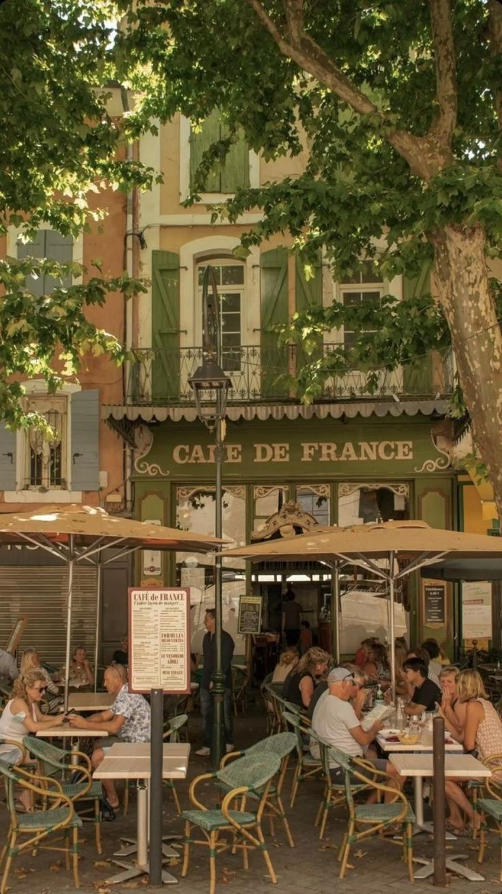

Destaques





Nossa cozinha.
O coração de tudo. É ali que a magia acontece, com o aroma de ingredientes frescos e o cuidado em cada detalhe da produção. Com um ambiente acolhedor e higienizado, nossa equipe trabalha com paixão para criar doces que encantam desde a primeira mordida. Mais do que um espaço de trabalho, nossa cozinha é um lugar onde amor e sabor se encontram todos os dias.
Learn More


Culinaria concorida.
Culinária irresistível que conquista corações e paladares com doces artesanais de dar água na boca. Com receitas exclusivas, ingredientes selecionados e um toque de carinho em cada preparo, nossas delícias se tornaram as mais desejadas da região
Learn MoreLocalizações


